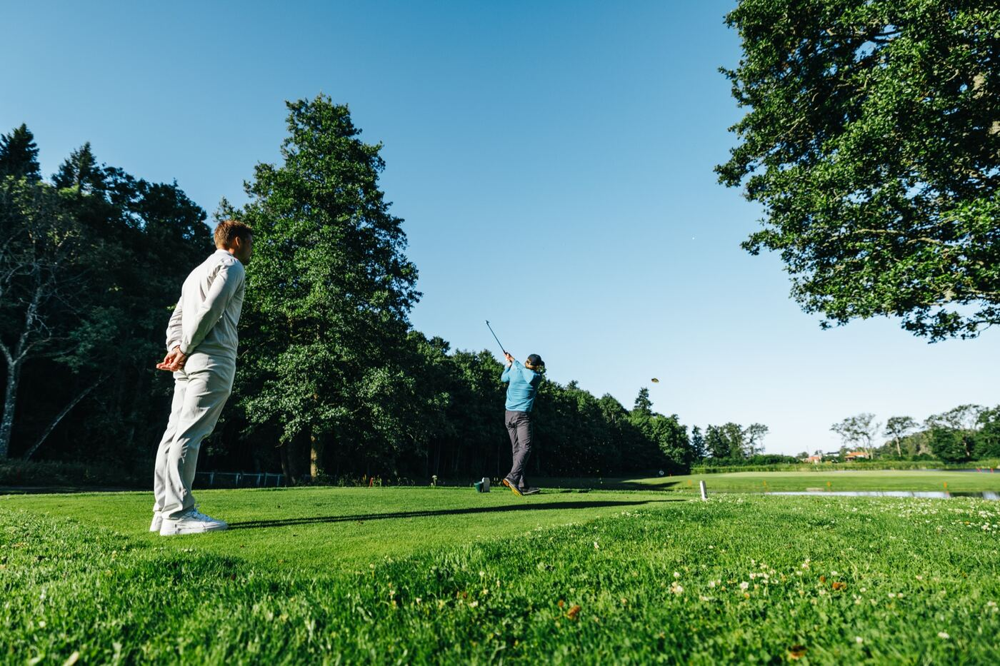

Sportssjefi går 18:40
Programmet for Bossum er lagt ut. Ta med regntøy og treningsdagbok. Svar på oppmøte innen fredag.
Utkast 2, retning B «Stall og helteflate». Sju skjermer fra menygruppen Daglig, i de godkjente aksefargene. Bare syntetiske data: spillerne heter Spiller 01–14. Bytt skjerm, bredde og tilstand under.
To har gjennomført under 70 % av planen to uker på rad. Én mangler Putt Speed fra fellestesten.
 Neste samling
Høstsamling Bossum
12dager igjen · 26.–28. okt
9 har svart ja, 2 venter, 1 kan ikke.
Se samlingen
Neste samling
Høstsamling Bossum
12dager igjen · 26.–28. okt
9 har svart ja, 2 venter, 1 kan ikke.
Se samlingen
Programmet for Bossum er lagt ut. Ta med regntøy og treningsdagbok. Svar på oppmøte innen fredag.
Resultatene fra fellestesten 7. oktober er ført. Se egen profil i PlayerHQ.
Påmeldingsfristen for Spanish International U18 er 20. oktober. To er påmeldt så langt.
Bare det spillerne har delt med Team Norway. Kilde: PlayerHQ og testdagen 7. oktober, hentet 14.10.2026.
Hele sesongen på ett ark. Velg en måned for detaljer.
Tre dager med fellesøkter og egentid. Programmet er publisert til spillerne 13. oktober.
2 venter på svar, 1 kan ikke. Fristen for svar er fredag 23. oktober.

Romfordeling og pakkeliste er ikke en del av samlingsprogrammet ennå. Skriv dem i gruppeposten.
Mesterskap og kvalifiseringsturneringer, med datoer, påmeldte og resultater.
GolfBox-turneringer hentes hver mandag. Manuelle er lagt inn av trenerteamet.
Tre runder slagspill, par 72. Kilde: manuelt lagt inn av Trener 1 12. okt.

3 landslagsspillere er med. Runde 3 pågår.
Plass og score står slik de er registrert. Mangler et tall, står det en strek. Runde 2 for Spiller 05 er ikke ført.
Brukes når turneringen ikke finnes i GolfBox. Resultater føres brutto.
Landslagsspillere i turnering akkurat nå.
Hull for hull fra turneringen hentes ikke ennå. Plassering og score over er siste registrerte runde. Resultater legges inn etter runden og vises under Turneringer og reise.